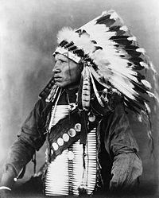

О названии
- Все мы знаем индейские слова Апачи, Кохана и Денвер. Знакомьтесь с Дакотой.
- Си́у (дако́та, dakhota, lakhota, nakhota — заключившие мир, объединённые, свои люди) — индейский народ группы сиу на севере США и юге Канады. Численность более 100 тыс. человек.
- В основе традиционной религии — вера в безличную силу (вакан-танка) и её проявления (вакан): таку шканшкан («то, что движет», «энергия»), солнце, луна, ветер, ураган, Четыре ветра, Громовые создания (Вакинйан), камень, земля, Дева-Белая Бизониха, бизон, двуногие, множество невидимых духов. Человек мог обратиться к вакан-танка с мольбой о помощи (вачекийе — «просьба о помощи по-родственному»), связующим предметом считалась курительная трубка (чанунпа). Существовали шаманы: вичаша-вакан и пежута-вичаша (лекарь). Основной ритуал у западных и центральных дакота — летняя Пляска Солнца. Распространены мифы творения о культурном герое и трикстере Пауке (Иктоми). Известно пиктографическое письмо, в том числе летописи («перечни зим»).
- Говоря техничесиким языком, речь идет о 4 стихиях: PHP+APACHE+MySQL+javascript, ночных плясках с бубном, форуме, модераторах и ужасном админе. Все это по мере возможноcтей и реализовано в Dakota-CMS. 